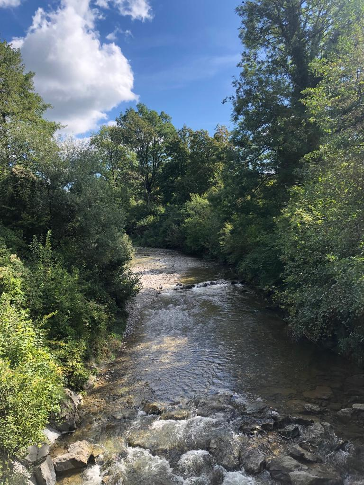

"Dein einziges Ziel im Leben besteht darin, zur vollen Blüte zu gelangen und die Person zu werden, die Du in Wirklichkeit schon bist."
Karl Jaspers
ANGEBOT
Mein Wunsch ist es, andere Menschen dabei zu unterstützen ihren Lebensweg möglichst frei gehen zu können.
Was ist Energiearbeit?
Jeder Mensch ist von seinem individuellen Energiefeld umgeben und durchdrungen. Dieses entsteht aus der Lebenskraft (Chi/Prana), die durch die Energiezentren fliesst (Chakren). Im Energiefeld ist alles abgespeichert was einen Menschen ausmacht. Dazu gehört auch, was jemand erlebt hat, seine Gefühls- und Gedankenmuster, persönliche Fähigkeiten und Stärken, Ängste, Beziehungen und vieles mehr. Durch die Arbeit mit dem Energiefeld können hindernde Kräfte oder Muster gefunden und gelöst werden, um immer freier, entspannter und authentischer durchs Leben gehen zu können.

Energiearbeit ist sehr vielfältig und kann unter anderem eingesetzt werden bei
körperliche Beschwerden
Stress und Leistungsdruck
Probleme mit dem Selbstbewusstsein, Selbstfürsorge
bei seelischer und körperlicher Erschöpfung (z. B. Burnout, Depression, Trauer)
Konflikten in Beziehungen (privates und berufliches Umfeld)
Wunsch nach beruflicher oder privater Neuorientierung
herausfordernden Lebenssituationen (z.B. Trennung, Scheidung, Todesfall, neue Arbeitsstelle…)
belastenden Gedankenmustern und Glaubenssätzen
Ängsten und Phobien
Kinder und Jugendliche (Ängste, Schlafstörungen, Konflikte mit Geschwister etc.)
ENERGETISCHE RAUMREINIGUNG
Fühlst Du dich in deiner Wohnung nicht richtig wohl, kannst aber nicht genau sagen warum? Hast Du Schlafstörungen, Konzentrationsstörungen oder kommst zu Hause einfach nicht zur Ruhe?
Gibt es Zimmer oder Ecken in deiner Wohnung, wo Du dich nicht so richtig wohlfühlst oder die Du nicht richtig nutzt? Hast Du das Gefühl, dass die Wohnung noch "Altlasten" mit sich trägt.
Möchtest Du deinem Geschäft einen energetischen "Frühlingsputz" verpassen, um die Kreativität und den Erfolg zu unterstützen?
Dann melde Dich bei mir für eine energetische Raumreinigung.
Preise nach Absprache.
BEHANDLUNG - ABLAUF - KOSTEN
Im Gespräch bestimmen wir gemeinsam das zu bearbeitende Thema. Die Behandlung erfolgt angezogen auf einer Massageliege. In der Regel dauert eine Sitzung zwischen 60 und 90 Minuten und kostet 90 Franken pro Stunde.
Ich spreche auch Italienisch, Spanisch, Französisch und Englisch.
Ich habe eine medizinische Ausbildung absolviert und lange Zeit im Gesundheitswesen gearbeitet. Vor einigen Jahren begegnete ich zum ersten Mal der Energiearbeit. Es war Liebe auf den ersten Blick oder besser gesagt auf die erste Berührung. Innerhalb kurzer Zeit wurde ich von Schmerzen und Gefühlen befreit, die mich schon viele Jahre begleitet hatten - ich war tief beeindruckt und unglaublich dankbar.
Als ich im Sommer 2018 von der Ausbildung als Energetikerin erfuhr, meldete ich mich ohne zu zögern an und nach einer Reihe intensiver Kurse habe ich das Zertifikat "Energetikerin nach A. J. Stäger" erlangt.